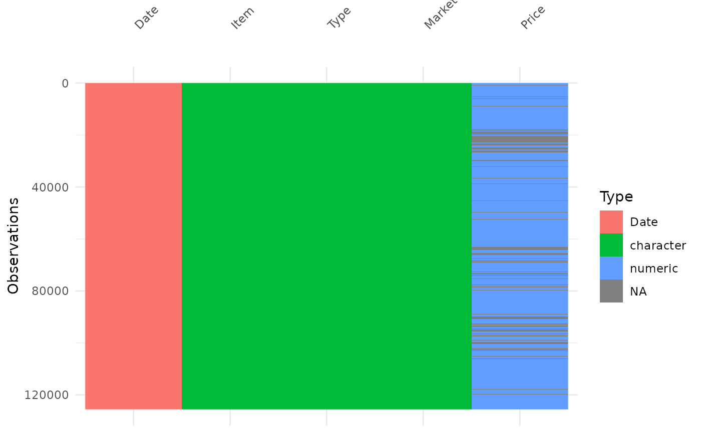
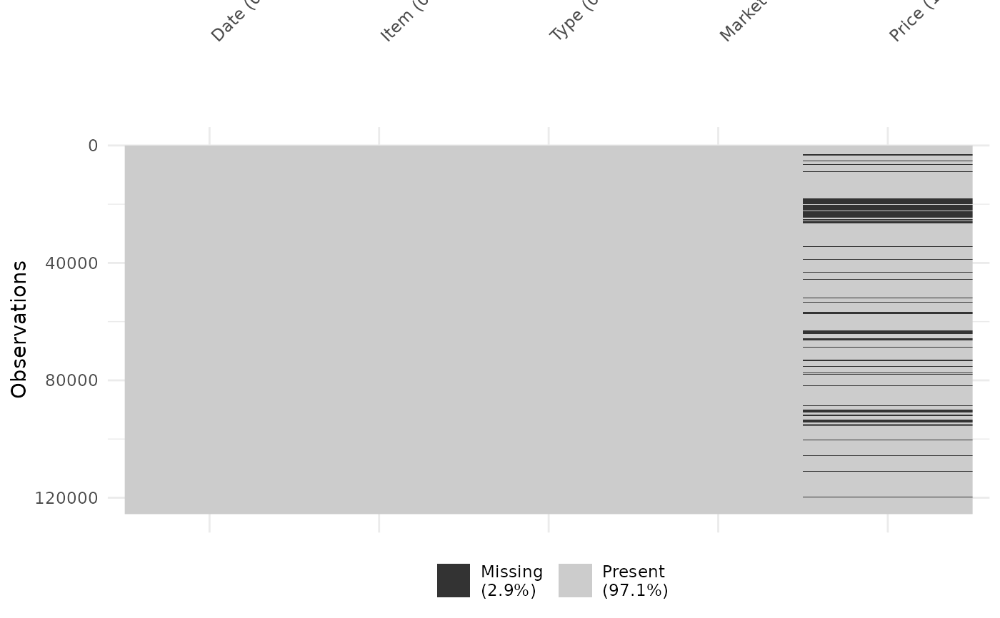
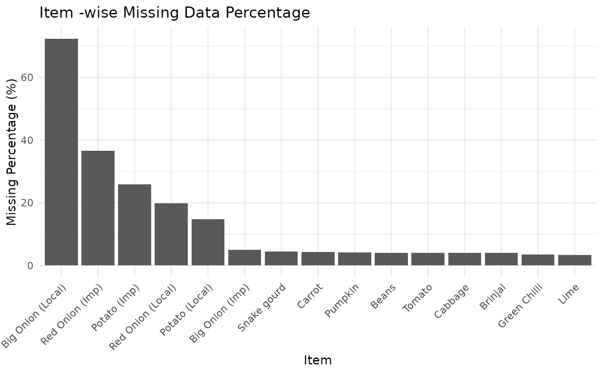

Generates a set of visual summaries to inspect data structure
and missing values in the dataset. The function returns:
(1) data type visualization,
(2) missingness map, and
(3) missing percentage by grouping variable.
Usage
visualize_missingness(data, group_var = "Item", target_var = "Price")
Arguments
- data
A data frame.
- group_var
Character string specifying the grouping variable
for missing percentage visualization (e.g., "Item").
- target_var
Character string specifying the variable
to assess missingness (e.g., "Price").
Value
A named list containing:
data_structure: Data type visualization.
missing_map: Missingness heatmap.
missing_by_group: Bar plot of missing percentages.
Examples
visualize_missingness(
data = vegetables.srilanka,
group_var = "Item",
target_var = "Price"
)
#> $data_structure

#>
#> $missing_map

#>
#> $missing_by_group

#>